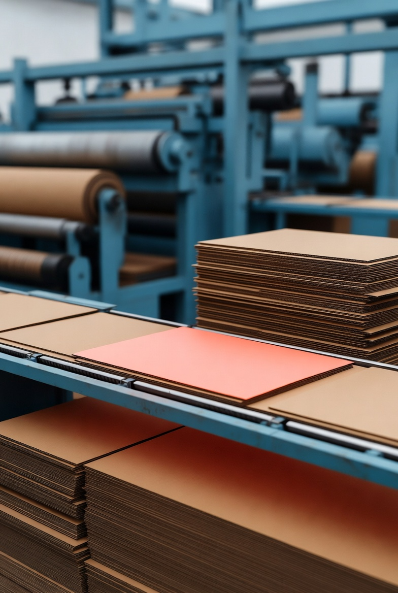
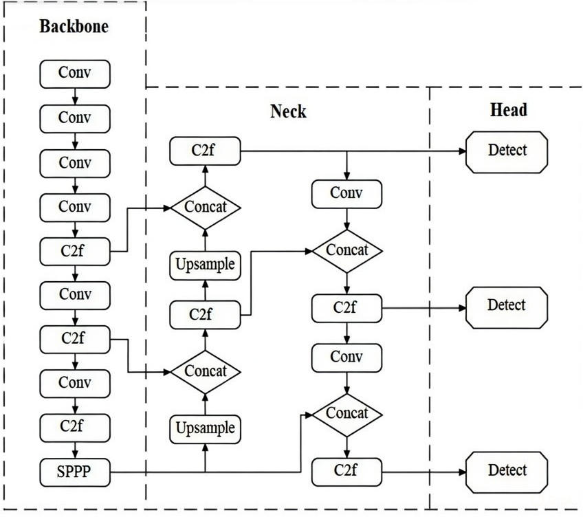
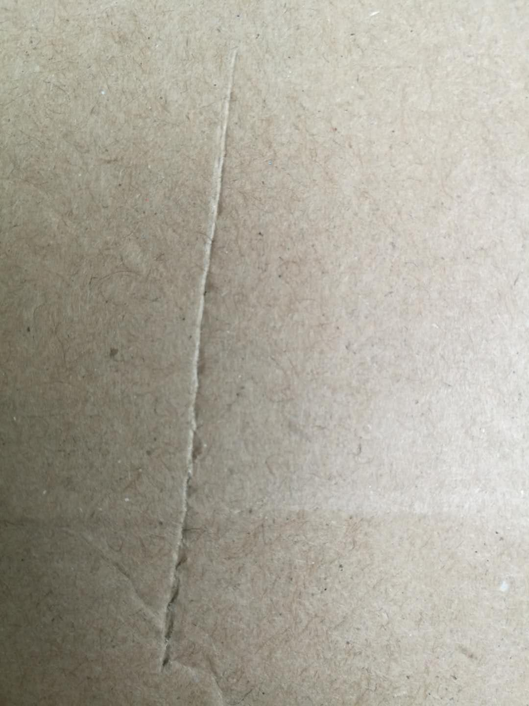
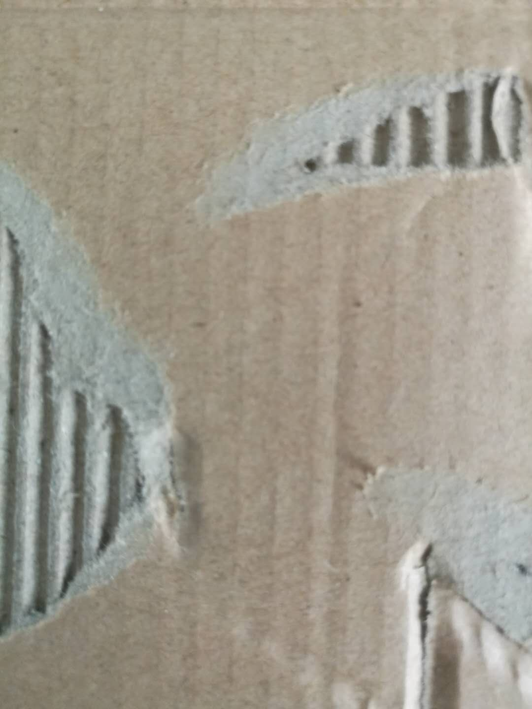
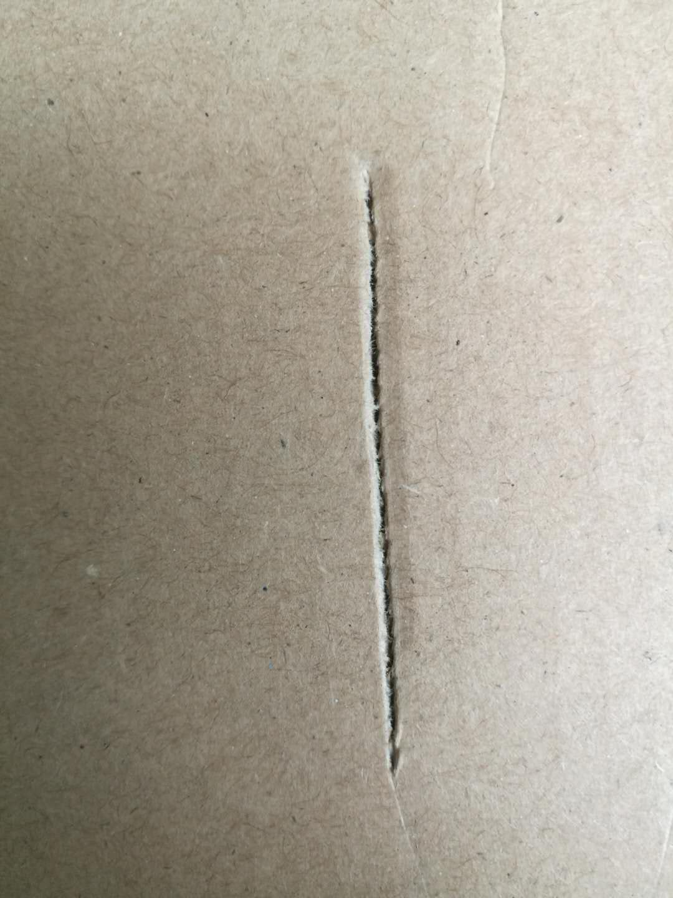
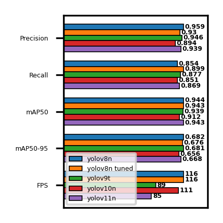
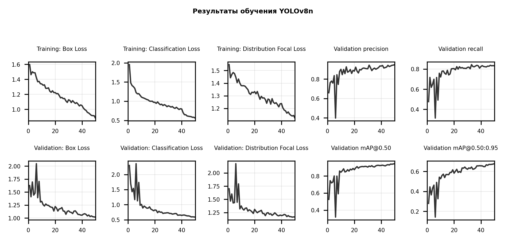
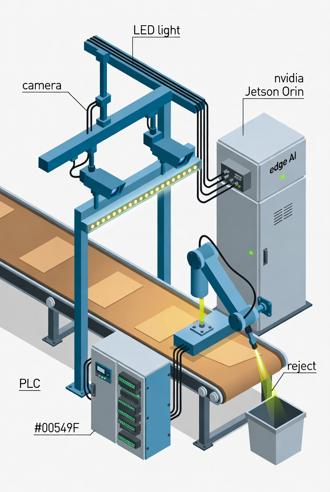

Расчёт для завода с объёмом 10 млн листов/год при цене ~10 ₽ за лист.
Проблема: ручной контроль медленный и ошибочный, простые алгоритмы машинного зрения не справляются с вариативностью текстуры, освещения и форм дефектов.


Для каждого позитивного бокса: \( p_c \) — предсказанная вероятность класса, \( y_c \in \{0, 1\} \) — истинная метка. Штраф растёт, когда модель ошибается.
Учитывает одновременно: перекрытие (IoU), расстояние между центрами (\( \rho^2/c^2 \)) и согласованность соотношения сторон (\( \alpha v \)).
Координаты бокса моделируются как дискретное распределение на сетке точек \( y_0, \dots, y_n \). \( S_i \) — предсказанные вероятности, истинное \( y \) лежит между \( y_i \) и \( y_{i+1} \). Позволяет учитывать неопределённость границ.



Pascal VOC → YOLO format. Все типы дефектов объединены в один класс — для производства важен сам факт дефекта, а не его природа. Расширенная валидация (20%) — для надёжного подбора гиперпараметров.
Базовая модель: YOLOv8n — оптимальный баланс скорости и качества; более крупные версии (s/m/l/x) не дают прироста на малом датасете.
Финальное обучение: 50 эпох — достаточно для стабильной сходимости.
| Гиперпараметр | Диапазон | Итог |
|---|---|---|
| lr0 | [10⁻⁵, 10⁻²] | 0.0026 |
| lrf | [0.01, 0.2] | 0.102 |
| momentum | [0.85, 0.95] | 0.939 |
| weight decay | [0, 0.01] | 0.0006 |
| warmup epochs | [1, 3] | 2 |
| mosaic | [0, 1] | 1.0 |
| mixup | [0, 0.3] | 0.025 |
| fliplr | [0, 0.6] | 0.283 |
| cos lr | {F, T} | True |

| Модель | mAP50 | FPS |
|---|---|---|
| YOLOv8n | 0.944 | 116 |
| YOLOv8n tuned | 0.943 | 116 |
| YOLOv9t | 0.939 | 89 |
| YOLOv10n | 0.912 | 111 |
| YOLOv11n | 0.943 | 85 |
Все модели близки (precision > 0.89, recall > 0.85). По точечным замерам выбор неочевиден — нужна статистическая оценка с учётом вариативности.
| v10n vs v8n | 6.8·10⁻⁸ | значимо |
| v10n vs v8n tuned | 1.7·10⁻⁷ | значимо |
| v10n vs v9t | 6.8·10⁻⁸ | значимо |
| v10n vs v11n | 3.4·10⁻⁷ | значимо |
| v8n vs v8n tuned | 0.69 | — |
| v8n vs v9t | 0.90 | — |
| v8n vs v11n | 0.58 | — |

Переход на этап 2 оправдан, если оборотный брак > 15–20% от общего.

| Показатель | 1 линия | 5 линий | 10 линий |
|---|---|---|---|
| Инвестиции, млн ₽ | 1.7–3.7 | 6.9–14.9 | 13.4–28.9 |
| Snet, млн ₽/год | 5.4–9.1 | 27–45 | 54–91 |
| Окупаемость | 2–8 мес | 2–7 мес | 2–6 мес |
Готов ответить на ваши вопросы